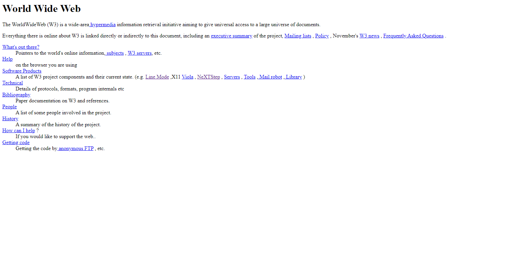

Pierwsze strony internetowe
Pierwsza strona internetowa została opublikowana 6 sierpnia 1991 roku przez Tima Bernersa-Lee, pod adresem http://info.cern.ch,
były na niej zawarte informacje na temat projektu World Wide Web, w skrócie W3.
Została napisana w czystym html-u, który również został opracowany przez Bernersa-Lee w oparciu na SGML.
Wyglądała ona podobnie do tej:

Niestety nie ma żadnej kopii ani zrzutu ekranu przedstawiającego jej pierwotną wersję.
Przez pierwsze dwa lata strony internetowe nie były czymś co mógł tworzyć każdy,
dopiero w kwietniu 1993 roku CERN opublikował orzeczenie,
i udostępnił World Wide Web dla publiki do wolnego użytku bez dodatkowych kosztów.
Według informacji ze strony internetlivestats.com liczba stron internetowych ze 130 w roku 1993 wzrosła do aż 2738 w 1994r.
niosąc ze sobą powstanie między innymi Yahoo czy stronę Microsoftu.
Miały one prostą i nieprzekombinowaną budowę, wykorzystywały protokoły HTTP
jak i Gopher który dawał dostęp do plików poprzez menu hipertekstowe prezentowane w stylu systemu plików.
Nie były to strony zapierające dech swoim wyglądem gdyż jeszcze nie było CSS,
a w samym HTML nie było zbyt wielu opcji dotyczących wyglądu,
lecz nie można im odmówić tego że spełniały swoje zamierzone role.
Dla przykładu oto parę stron: